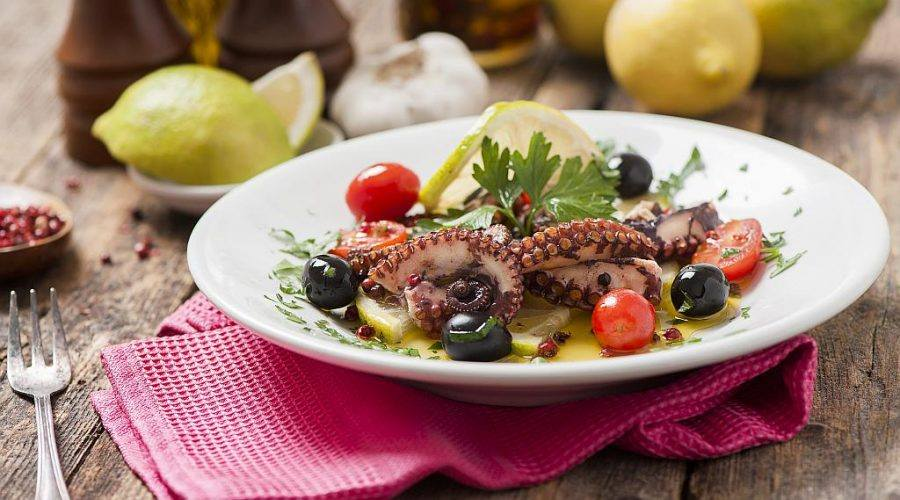

Octopus Salad

A must-try dish when in Croatia accompanied by a delicious glass of local wine
In Croatia, especially in Dalmatia region, octopus plays the main role in many healthy and tasty dishes like octopus under the lid, baked octopus with vegetables and various salads.
Ingredients
- 2 kg octopus
- 15 - 20 cherry tomatoes
- 15 - 20 black olives
- Extra virgin olive oil
- 1 lemon
- 5 g parsley
- Salt
- Pepper